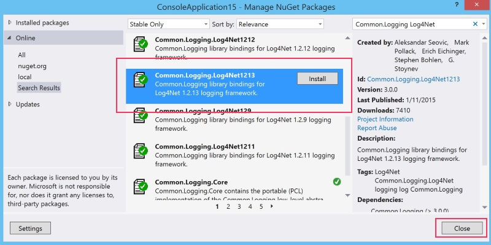

The SDK uses the Apache Common Infrastructure Libraries for .NET, which provides a
common interface for logging adapters. The SDK currently uses version 3.0 of Common.Logging.
In order to use logging within the SDK, you need to reference the packages for the
adapter you want to use. The following steps describe the process for using the Log4Net
Adapter with the SDK:
-
Using the NuGet Package Manager in Visual Studio, include the following package
in your project: Common.Logging.Log4Net1213

-
In your App.Config or Web.Config, add
the following elements between the <configuration> and
</configuration> tags so that your configuration looks like
this:
<?xml version="1.0" encoding="utf-8" ?>
<configuration>
<configSections>
<sectionGroup name="common">
<section name="logging" type="Common.Logging.ConfigurationSectionHandler, Common.Logging" />
</sectionGroup>
<section name="log4net" type="log4net.Config.Log4NetConfigurationSectionHandler, log4net" />
</configSections>
<common>
<logging>
<factoryAdapter type="Common.Logging.Log4Net.Log4NetLoggerFactoryAdapter, Common.Logging.Log4Net1213">
<arg key="configType" value="INLINE" />
</factoryAdapter>
</logging>
</common>
<log4net>
<appender name="FileAppender" type="log4net.Appender.FileAppender">
<param name="File" value="C:\temp\log.txt" />
<layout type="log4net.Layout.PatternLayout">
<conversionPattern value="%date [%thread] %level %logger - %message%newline" />
</layout>
</appender>
<root>
<level value="DEBUG" />
<appender-ref ref="FileAppender" />
</root>
</log4net>
<startup>
<supportedRuntime version="v4.0" sku=".NETFramework,Version=v4.5.1" />
</startup>
</configuration>
Note: This example creates a FileAppender. There's a wide variety of possible
appenders and configuration options you can customize to your liking. For more
information regarding customizing your configuration, check out the
Log4Net documentation.